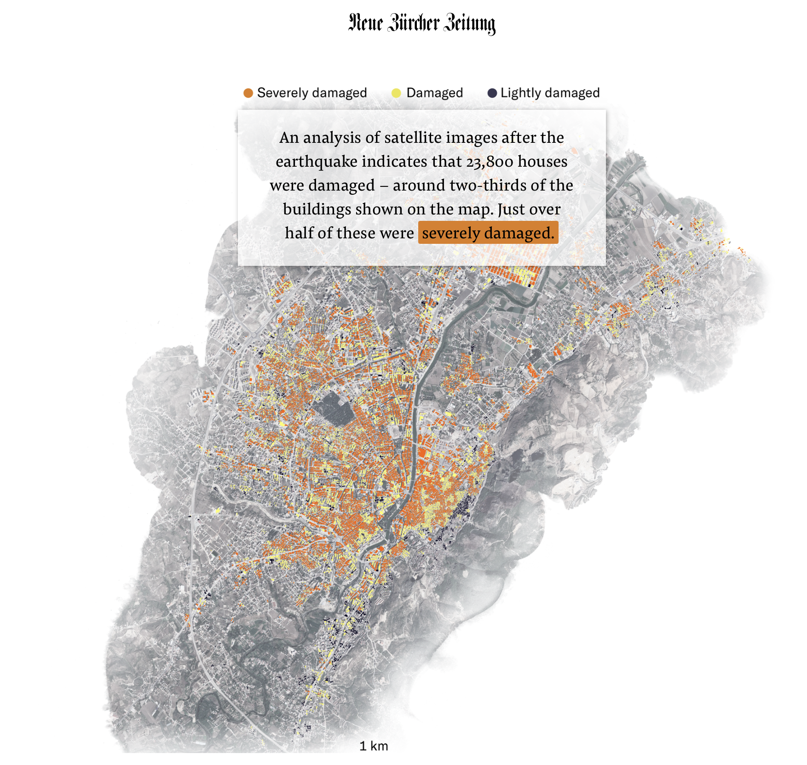

Portfolio
Conflict & Crisis Damage Mapping

Ukraine Conflict Damage Mapping
Contributed SAR-based proxy damage maps and visual analysis of destruction in Ukrainian cities including Mariupol.

Gaza Conflict Damage Mapping
Mapped building-level destruction, verified conflict damage, and supported media analysis with satellite data.
🌠Geospatial ML & Tools
 Predicting Burned Areas on Landsat 5 Images using Machine Learning in Python
Predicting Burned Areas on Landsat 5 Images using Machine Learning in Python
This post provides a comprehensive guide to predicting burned areas on Landsat 5 images using machine learning in Python.
 Estimating Urbanisation using Machine Learning and Sentinel-2 Imagery in Google Earth Engine
Estimating Urbanisation using Machine Learning and Sentinel-2 Imagery in Google Earth Engine
…estimate the extent of urbanization in Delhi using ML + remote sensing…
 Turkey Earthquake Damage Mapping
Mapped estimated building damage using remote sensing (NZZ).
 Rhine Flood Dashboard
Rhine Flood Dashboard
GEE-powered tool to visualize flooding and extent change.
 Compare Spectra App: A Simple and User-Friendly Tool for Spectral Analysis
Compare Spectra App: A Simple and User-Friendly Tool for Spectral Analysis
The compare-spectra app simplifies spectral analysis for remote sensing projects.
 Spatial Viz gallery
Spatial Viz gallery
A few of of my vector and raster maps
🧠Data, Visuals & Public Impact
 Data Science Slides
Data Science Slides
My teaching slides from the data science class.
 Data Viz gallery
Data Viz gallery
A few of my data visualisations
 Data Science works at CPR
Data Science works at CPR